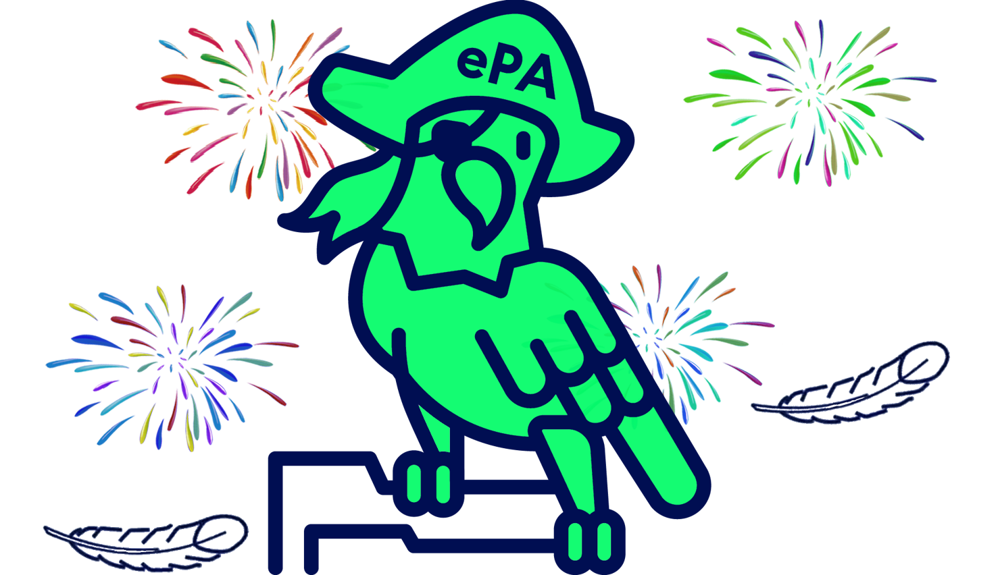

Rescuer in need
You did it and found the three lost pieces to upload the analog patient record.
Now you can remember the evening.
You lit a bonfire here on the island with the analog patient file, the ePArrot could detect the smoke from a distance and flew to you to save you.
But now it's time for you to upload your patient file to the ePA so that you don't get the idea of fanning a bonfire with it again! The hospital would have filed the report about the last night there and you could have informed yourself directly about the last night.
Congratulations

You have solved the story of the ePA-TI mystery. But the CTF is not over yet, in CTFd solve the task "Find all the lost parts from last night" to unlock more tasks.
The flag of the task is composed of the three solutions of the found parts...